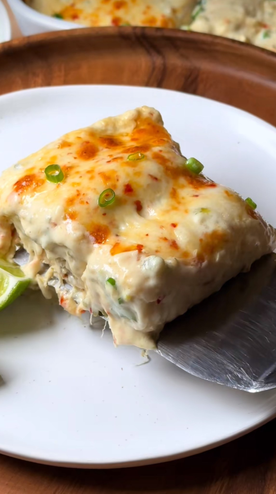

Image sourced from here.
Chicken Filling
- 1 Roasted jalapeños (minced)
- 2 rotiserie chicken breasts (shredded)
- 1 whole lime juice
- 1 tsp onion powder
- 1 tsp garlic powder
- 1⁄4 tsp salt & black pepper
- 1 cup mozzarella
Cream sauce
- 2 tbsp butter
- 1 garlic clove (grated)
- 2 tbsp flour
- 1 cup chicken broth
- 1 Roasted jalapeños (minced)
- 1⁄2 cup sour cream
- 1⁄2 block cream cheese
- Pinch of white pepper
Other ingredients
- 8 small/medium flour tortillas
- 1 cup Shredded Monterey-jack cheese
- 1⁄2 bunch green onion (garnish)
- Lime wedges (garnish)
Notes
- Roasted jalapeños: Lightly oil pan and cook jalapeños covered with a lid for 12-15 minutes or until charred. Turn jalapeños every 5 minutes or so. Allow to cool covered for 10-15 mins and peel off the skin then finely mince with knife.
- Baking directions: Bake at 350/375 degrees f for 25-30 minutes uncovered *optional broil 1-2 minutes*
My own notes
- 03/08/2025 - The first time I made this, I combined bell pepper, mushrooms, parmesan & my own spice mix (less salt + KEG steak seasoning). I also made a basic white sauce & used mozzerella cheese... and it was delicious.
Recipe sourced from here.